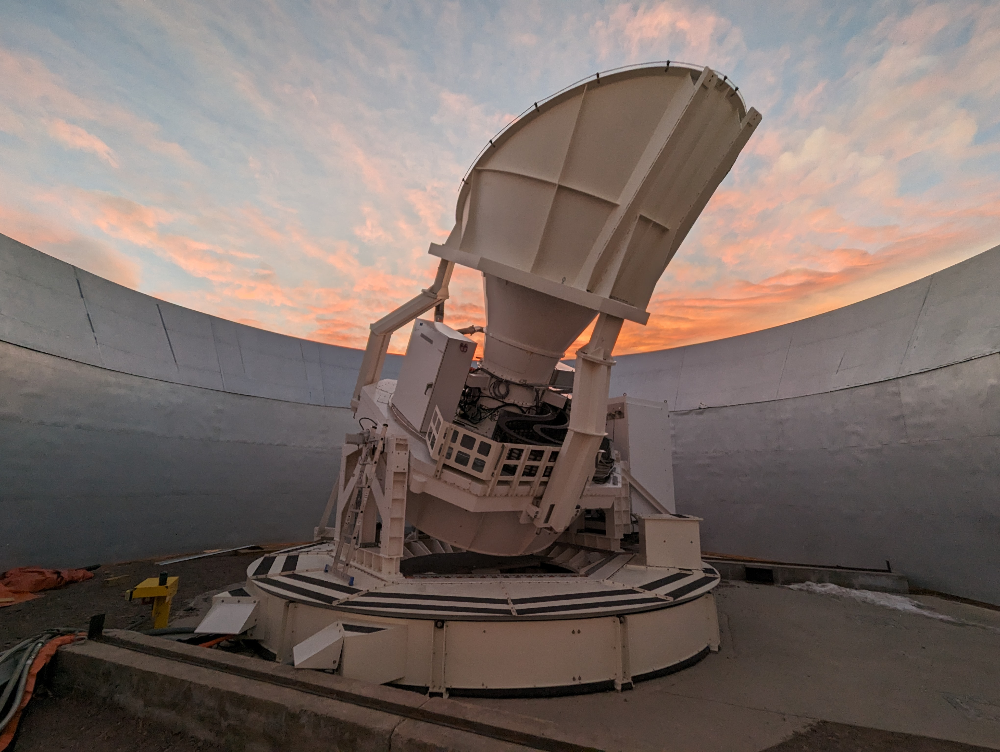
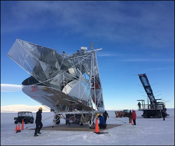

From the Big Bang to the Milky Way.
Our work spans experimental cosmology, astrophysical instrumentation, polarimetry and data analysis, with a focus on the cosmic microwave background (CMB), interstellar dust and cryogenic technology.
Simons Observatory
The Simons Observatory (SO) is a suite of CMB telescopes observing since 2023 from the Chilean Atacama Desert at over 5,000 m. Our group is part of the collaboration and builds on experience designing, building and testing the SO small aperture telescopes (SATs), which search for the faint signature of primordial gravitational waves in CMB polarization.
Together with the Large Aperture Telescope, SO will constrain inflation, the sum of neutrino masses, dark energy and the growth of cosmic structure.
Group members are primarily involved in characterization and mitigation of systematic effects for both the SATs and the Large Aperture Telescope (LAT).

BLAST-TNG & BLAST Observatory
The Balloon-borne Large Aperture Submillimeter Telescope (BLAST-TNG) maps polarized dust emission across the Milky Way, revealing how magnetic fields shape the interstellar medium and regulate star formation. It flew from Antarctica in December 2018.
The next step is the BLAST Observatory or DUST SPRITE: a slightly smaller instrument at higher frequencies, designed for long-duration flights on NASA super-pressure balloons.

Instrumentation & analysis
Cryogenics
Dilution refrigerators, pulse-tube coolers and thermal design to take detectors to ~100 mK.
Polarimetry
Half-wave plates, optics and calibration strategies to separate faint polarized signals from systematics.
Detectors & readout
Superconducting transition-edge sensors and multiplexed readout for thousands of pixels.
Data analysis
Map-making, foreground separation and power-spectrum estimation, from timestream to cosmology.